자연생태복원기사(구) (2013-08-18 기출문제)
1과목: 환경생태학개론
1. 수질오염을 가속화시키는 화학물질로써 합성세제의 독성 피해 증상이 아닌 것은?
- 간장장애
- 백형구와 적혈구 감소
- 동맥경화 촉진
- 인체의 효소활동 증가
(정답률: 87%)

2. 종다양성에 대한 원리로 적합하지 않은 것은?
- 종다양성은 서식처의 복잡한 정도에 따라 증가한다.
- 종다양성은 지역의 규모가 커짐에 따라 증가한다.
- 한 지역에서 종다양성은 종의 지리적 근원지에 가까울수록 증가한다.
- 종다양성은 일반적으로 고위도지역에서 증가한다.
(정답률: 82%)
3. 생태계에서 천이(succession)를 크게 3종류로 구분할 수 있는데 이중 환경조건과 자원을 변형시키는 자체의 생물학적 작용의 결과로 일련의 변화가 일어나는 경우에 해당하는 것은?
- 자생천이(autogenic succession)
- 타생천이(allogenic succession)
- 종속영약적 천이(heterotrophic succession)
- 퇴화적 천이(degradative succession)
(정답률: 70%)
4. 생태계의 구성요소 중 생물적 요소(biotic components)에 해당되지 않는 것은?
- 영양적 지위(trophic niche)
- 소비자(consumer)
- 생산자(producer)
- 분해자(decomposer)
(정답률: 87%)
5. 다음 부영양화 현상에 관한 설명 중 틀린 것은?
- 부영양화 현상이 있으면 용존산소량이 풍부해진다.
- 부영양화 현상은 물이 정체되기 쉬운 호수에서 잘 발생한다.
- 부영양화된 호수는 식물성프랑크톤이 대량 발생되기 쉽다.
- 부영양화된 호수는 식물성 조류에 의하여 물의 투명도가 저하된다.
(정답률: 80%)
6. 1865년 독일의 물리학자 클라우지우스(Rudolf Clausius)에 의해 최초로 창안되고, 에너지의 상태를 일컫는 엔트로피는 어떠한 에너지를 말하는가?
- 사용 불가능한 에너지
- 잠재적 에너지
- 오염된 에너지
- 유기에너지
(정답률: 72%)
7. 다음 [보기]에서 설명하는 것은?
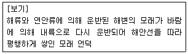
- 간척지역
- 해안습지
- 해안사구
- 망그로브습지
(정답률: 75%)
8. 아래 설명과 그림이 나타내는 A지역의 군집 유형은?
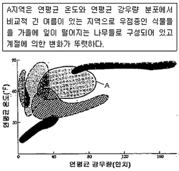
- 온대낙엽수림(Temperate Deciduous Forest)
- 대초원(Prarie)
- 사바나(Savana)
- 타이가(Taiga)
(정답률: 65%)
9. 다음 중 툰드라(Tundra)에 대한 설명으로 옳은 것은?
- 연간강수량이 2000mm2 또는 그 이상이다.
- 생육기간이 연 100일 이하이며 짧은 여름에도 밤에는 기온이 0℃에 가깝다.
- 중남미, 아프리카, 남아시아 일부 지역에서 나타난다.
- 건기와 우기가 뚜렷하고 연강우량이 1000mm에 달한다.
(정답률: 71%)
10. 세계적으로 중요한 습지의 상실을 억제하고, 물새의 서식지인 습지를 국제적으로 보호하려는 협약은?
- 비엔나 협약
- 바르셀로나 협약
- 람사협약
- 한중 환경협력 협정
(정답률: 77%)
11. 영양구조 및 기능을 함께 볼 수 있는 것으로 생태적 피라미드의 구조 등 변수가 많기 때문에 바람직하지 않은 생태적 피라미드는 무엇인가?
- 개체수 피라미드(pyramid of numbers)
- 생체량 피라미드(biomass pyramid)
- 에너지 피라미드(pyramid of energy)
- 생산력 피라미드(pyramid of productivity)
(정답률: 70%)
12. 인간의 활동에 의해서 희귀종들이 멸종되어 가는데, 현재까지 인간의 활동 중 멸종의 원인으로 가장 큰 요인은?
- 외부종의 유입
- 서식지 파괴
- 사냥
- 상업목적
(정답률: 84%)
13. 다음 중 토양침식의 주된 원인이 아닌 것은?
- 과도한 목축
- 과도한 경작
- 간벌
- 삼림제거
(정답률: 73%)
14. 다음의 생산성에 관한 설명 중 ( )에 알맞은 용어를 순서대로 나열한 것은?
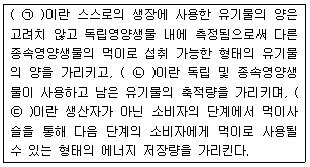
- ㉠ 순일차생산력(net primary productivity)
㉡ 순군집생산력(net community productivity)
㉢ 이차 생산력(secondary productivity) - ㉠ 순군집생산력(net community productivity)
㉡ 순일차생산력(net primary productivity)
㉢ 이차 생산력(secondary productivity) - 이차 생산력(secondary productivity)
㉡ 순일차생산력(net primary productivity)
㉢ 이차 생산력(secondary productivity) - ㉠ 순일차생산력(net primary productivity)
㉡ 이차 생산력(secondary productivity)
㉢ 순군집생산력(net community productivity)
(정답률: 63%)
15. 낮에 주위가 따뜻해지면 햇빛을 받는 식물과 새의 몸에서는 온도 상승에 따라 체온을 일정하게 유지하기 위한 생리적 변화가 나타나는데 이처럼 외부환경이 달려져도 생물체 내부의 환경이 일정하게 유지되는 경향은 무엇인가?
- 순화
- 호흡
- 향상성
- 주기성
(정답률: 80%)
16. 담수의 수질평가시 생물지수를 이용한 측정 방법에 대한 설명 중 옳지 않은 것은?
- 군집변화의 수를 이용한 자수로 계량화하여 분석하는 방법을 말한다.
- 종 또는 분류군에 따라 다른 가중치를 준다.
- 생물이 지닌 내성의 한계나 환경에 따른 반응성을 고려한 방법이다.
- 생물의 여러 가지 고유성을 감안하여 제작된 객관적인 지수이다.
(정답률: 63%)
17. 국제자연보존연맹에 의한 보호대책이 없으면 가까운 장래에 멸종할 것으로 생각되는 것은?
- 절멸종
- 위기종
- 취약종
- 희귀종
(정답률: 83%)
18. 호수에 관한 설명 중 옳지 않은 것은?
- 해양의 투광대와 유사한 수역은 준조광대(표층대 : limnetic zone)이다.
- 연안대(littoral zone)는 빛이 호수 바닥까지 미치며 육지와 인접한 수역을 포함한다.
- 심연대(심층대 : profundal zone)에서는 광합성이 호흡을 초과한다.
- 북반구 호수의 준조광대에서는 계절적으로 그 생산량이 연안대를 초과한다.
(정답률: 75%)
19. 시간이 경과함에 따라 생물군집이 연속적으로 변화하는 과정을 거친 후 도달하는 안정된 시기를 무엇이라 하는가?
- 극상
- 포식
- 경쟁
- 기생
(정답률: 83%)
20. 호수내에서 영양물질의 농도조절 방법이 아닌 것은?
- 하수처리장의 건설
- 저질토 제거
- 호수세척과 저층수 월류
- 생물량의 제거
(정답률: 68%)
2과목: 환경계획학
21. 우리나라 국토의 용도지역 중 관리지역을 세분화하면 분류에 해당되지 않는 것은?
- 계획관리지역
- 개발관리지역
- 생산관리지역
- 보전관리지역
(정답률: 58%)
22. 자연환경보전법에 의한 생태ㆍ자연도의 등급을 평가하는데 고려하는 4가지 기준이 아닌 것은?
- 멸종위기 야생동ㆍ식물
- 습지의 생태적 상태
- 식생의 현황
- 산림의 유형
(정답률: 66%)
23. 녹지 네트워크(green network)의 내용으로 맞지 않는 것은?
- 자연의 천이와 인간과의 관계 형성을 지양한다.
- 구조적인 형태에 따라 녹지 등의 연결성 및 방향성을 중요시하는 것은 선형이다.
- 생태네트워크와 유사하나, 네트워크를 위한 연결대상이 주로 식생, 공원, 녹지, 산림으로 제한된다.
- 녹지공간은 도시생태계의 건전성을 종진하기 위한 생태네트워크의 핵심이다.
(정답률: 54%)
24. 국토환경보전계획의 기조로 볼 수 없는 것은?
- 인간과 자연의 공생(symbiosis)
- 개발과 보전의 조화(harmony)
- 현 세대와 미리 새대의 형평(equilibrim)
- 국민의식과 경제성장의 조화(prosperity)
(정답률: 74%)
25. 용도구역 중 시가화조정구역에 대한 설명이 바르게 된 것은?
- 도시의 계획적인 개발을 도모하기 위해 일정 기간 시가화를 유보할 필요가 있는 지역
- 도시의 무질서한 확산을 방지하기 위해 도시의 개발을 제한할 필요가 있는 지역
- 주거기능 또는 청소년 유해시설 등 특징시설의 입지를 제한할 필요가 있는 지역
- 보안상 도시의 개발을 제한할 필요가 있는 지역
(정답률: 58%)
26. 생태 네트워크 계획의 설명으로 옳은 것은?
- 기존의 자생식물을 최대한 보전, 활용한다.
- 거점 녹지로서 중앙녹지대를 단지중심부에만 조성한다.
- 도시 내 구릉이나 야산 지역을 개발하여 근린공원을 조성한다.
- 기존 녹지를 제거하고 네트워크 계획에 맞는 녹지를 조성한다.
(정답률: 68%)
27. 도시생태공원계획 시 고려할 사항으로 가장 거리가 먼 것은?
- 식재시 식물들의 지역성보다는 수종의 다양성을 고려
- 기존의 수림지나 초지, 수변공간 등과 인접한 장소 선정
- 구역의 보호, 육성을 위해 이용제한 등을 필요에 따라 마련
- 세부적인 환경을 고려하여 야생동물을 위한 환경을 조성
(정답률: 64%)
28. 다음 설명은 「국토의 계획 및 이용에 관한 법률」에 의해 분류된 어떤 용도지역인가?
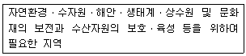
- 도시지역
- 관리지역
- 자연환경보전지역
- 농림지역
(정답률: 60%)
29. 도시, 도로, 농지, 산지, 공사장 등으로서 불특정 장소에서 불특정하게 수질오염물질을 배출하는 배출원을 지칭하는 것은?
- 점오염원
- 선오염원
- 비점오염원
- 기타오염원
(정답률: 50%)
30. 자연환경보전법상 생태ㆍ경관보전지역의 지정 대상에 해당하지 않는 것은?
- 자연상태가 원시성을 유지하고 있는 지역
- 생물다양성이 풍부하여 보전 및 학술적 연구가치가 큰 지역
- 다양한 생태계를 대표할 수 있는 지역 또는 생태계의 표본지역
- 자연훼손이 심각하여 생태계 복원이 시급한 지역
(정답률: 59%)
31. 자연환경보전기본계획의 주요 내용이 아닌 것은?
- 자연경관의 보전ㆍ관리에 관한 사항
- 생태측의 구축ㆍ추진에 관한 사항
- 자연환경의 현황 및 전망에 관한 사항
- 사전환경성검토제도의 정착 및 발전에 관한 사항
(정답률: 57%)
32. 생태도시 적용기술 중 어메니티 계획의 대상에서 비교적 거리가 먼 것은?
- 생태경관 조성
- 시각회랑의 확보
- 스카이라인 조절
- 재활용 처리 시스템
(정답률: 50%)
33. 생태 네트워크 조성의 필요성에 대한 설명으로 옳지 않은 것은?
- 무절제한 개발로 인해서 훼손된 환경을 개발과 보전이 조화를 이루면서 자연지역을 보전하기 위함이다.
- 생물종의 소멸 비율을 최소화하고, 자연화를 위한 기회를 제공하기 위함이다.
- 도시 전체의 공간계획에 있어 불필요한 생물서식공간의 조성으로 인한 경제적 손실비용을 최소화하기 위함이다.
- 도시 및 지역계획차원에서 도시를 각각의 개별적인 시스템으로 유지ㆍ운영하기 위함이다.
(정답률: 46%)
34. 다음 ( )안에 적합한 숫자는?
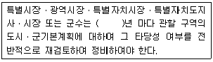
- 1
- 3
- 5
- 10
(정답률: 60%)
35. 생태 네트워크 계획 시 고려해야 할 주요 내용이 아닌 것은?
- 토지의 경제적 가치
- 환경학습의 장으로서 녹지의 활용
- 인간과 자연이 만나는 장으로서의 공간
- 생물의 생식ㆍ생육공간이 되는 녹지의 확보
(정답률: 67%)
36. 2개 이상의 도시의 공간구조 및 기능을 상호 연계시켜 환경을 보전하면서 체계적인 도시정비 및 장기발전방향을 정하는 계획은?
- 광역도시계획
- 도시기본계획
- 지구단위계획
- 시군종합계획
(정답률: 67%)
37. 생태도시에 적용할 수 있는 계획요소 분야로 가장 거리가 먼 것은?
- 토지이용 및 교통ㆍ정보통신 분야
- 어메니티 분야
- 생태 및 녹지 분야
- 사회교육ㆍ문화 분야
(정답률: 32%)
38. 환경문제의 원인이라고 볼 수 없는 것은?
- 대기오염과 산성비
- 수질오염
- 생태계 파괴
- 인구의 감소
(정답률: 72%)
39. 하천정비에 따른 하천환경의 영향에 대한 내용으로 맞는 것은?
- 확폭 - 동물의 하도 접근성 감소
- 고수부지 개발 - 균일한 이토 및 모래 퇴적에 따른 먹이 확보 곤란
- 하도포장 - 저생유기물의 배양기능 파괴
- 낙차공 및 보 - 저수로변 식생생태 단순화
(정답률: 55%)
40. 생태네트워크 유형분류 중 공간특성에 따른 유형분류가 아닌 것은?
- 지역적 차원
- 사회적 차원
- 국가적 차원
- 국제적 차원
(정답률: 60%)
3과목: 생태복원공학
41. 다음 중 유효토심에 대한 설명으로 틀린 것은?
- 유효토심에서는 뿌리가 호흡하며, 생육할 수 있도록 적당한 공기와 수분이 필요하다.
- 교목의 유효토심은 관목의 유효토심보다 두텁고 넓다.
- 근계 가운데 수분이나 양분을 흡수하는 세근의 생육범위는 유효토심의 깊은 부분이다.
- 얕은 부분은 수분, 공기, 양분을 보유할 수 있는 부드러운 성질의 토층이 요구된다.
(정답률: 68%)
42. 황폐된 산지 급류계천이나 야계의 정비지침으로 고려해야 할 주요한 사항 중 가장 거리가 먼 것은?
- 주민휴식 공간의 제공
- 레크리에이션 기능의 향상
- 자연성을 살린 아름다운 수변공간의 연출
- 산사태 방지 프로그램 및 현장교육의 효과
(정답률: 31%)
43. 다음 표는 산지 1ha당 경사도별 단끊기 시공 연장표이다. 괄호 안에 알맞은 계단 연장은?
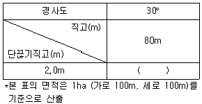
- 2000m
- 3000m
- 4000m
- 16000m
(정답률: 55%)
44. 다음 중 일반적인 식생천이의 단계로 맞는 것은?
- 나지 → 1, 2년생 초본 → 다년생초본 → 관목 → 음지성교목 → 내음성교목 → 극상
- 나지 → 1, 2년생 초본 → 관목 → 내음성교목 → 호양성교목 → 극상
- 나지 → 1, 2년생 초본 → 다년생초본 → 관목 → 호양성교목 → 내음성교목 → 극상
- 나지 → 1, 2년생 초본 → 관목군락 → 호양성교육 → 호습성교목 → 내음성교목 → 극상
(정답률: 75%)
45. 도시지역에서 잠자리의 서식환경을 위하여 연못을 만들려고 한다. 관리할 때 유의사항으로 맞지 않는 것은?
- 배수량의 조절은 한 번에 물을 빼는 것을 피하고, 1/3 정도로 나누어 교체한다.
- 연못 바닥의 모래뻘, 낙엽 및 낙지는 유충의 거처나 먹이의 발생원이기 때문에 가능한 한 남기도록 한다.
- 인공연못이나 간이 잠자리 유치 수조에서는 물 바꾸기의 획수를 최대한 자주 한다.
- 간이 잠자리 유치 수조 등에 물을 보급할 때에는 1/3~1/4 정도면 수돗물을 사용해도 지장은 없다.
(정답률: 63%)
46. 자연형 하천 복구공사에 활용하는 야자섬유 재료의 규격 및 설치기준으로서 가장 적합한 것은?
- 야사섬유망의 규격은 폭 2m, 길이 20m를 표준으로 한다.
- 야자섬유망은 나무말뚝 착지핀을 사면에 10m2 당 1개 이상 박아 견고히 설치한다.
- 야사섬유로프는 불순물을 완전히 제거한 후 두께 15~20mm로 꼬아 만든다.
- 야자섬유 두루마리의 규격은 길이 2m, 지름 0.6m 크기의 실린더형을 표준으로 한다.
(정답률: 50%)
47. 식물 발생재를 분쇄하여 식재지에 활용했을 때 유리한 점이 아닌 것은?
- 표층의 미관을 향상할 수 있다.
- 표층의 생물다영화를 촉진할 수 있다.
- 표층의 부식화 진행을 방지할 수 있다.
- 표층의 건조방지와 보수력을 향상시킬 수 있다.
(정답률: 34%)
48. 비탈 파종녹화공종 시 종자의 평균입수가 180입/g, 순량률이 100%, 발아율 50%, 발생기대본수 200본/m2일 경우 파종중량(g/m2)은?
- 2.2
- 4.2
- 6.2
- 8.2
(정답률: 57%)
49. permaculture(Mollison, 1991)의 생태복원적 측면으로 틀린 것은?
- 환경을 보다 지속가능하게 만들어준다.
- 순환적 지원사용으로 자원 효율성을 높인다.
- 계속적인 연작 영농행위로 생상성을 높여준다.
- 친환경적 유기농법으로 활용할 수 있다.
(정답률: 72%)
50. 훼손지 비탈녹화공법의 설명 중 옳은 것은?
- 녹화용식생자루공법 : 종자와 띠를 부착한 비료대를 비탈면에 수평상으로 일정하게 깔고, 흙으로 덮는 공법
- 개량 시드스프레이(seed spray)공법 : 토사, 경질토사, 리핑풍화암 등에 얇은 층의 식생기반재를 부착시켜 식생의 활착을 도와주는 공법
- 종자부착네트피복공법 : 코이어네트를 원료로 만든 매트에 식생기반을 충전시켜 비탈면침식방지를 하는 공법
- 볏짚거적덮기 : 종자, 비료, 흙을 볏짚에 부착시켜 비탈면에 덮어놓은 후 핀으로 고정시키는 공법
(정답률: 46%)
51. 훼손지 환경녹화를 위해 고려해야 하는 환경요인으로 바람직하지 않은 것은?
- 훼손지는 식물의 생장이 곤란한 장소이므로 인위적으로 식물을 도입하기 위해서는 미기상을 고려한 생태복원이 필요하다.
- 복원은 열악한 토양조건을 개선함이 필수적 요인이므로 공사 전에 포토를 제거하여 도입되는 종과의 경쟁을 피하는 것이 필요하다.
- 식생의 복원에 있어서는 인공적인 요인을 제거했을 때 나타날 수 있는 잠재자연식생에 대한 고려가 필요하다.
- 생물적 자연은 항상 변동되기 때문에 복원결과는 시간의 변화에 따라 어떤 방향으로 나아갈 것인가에 대한 장기적인 진단과 개선이 필요하다.
(정답률: 61%)
52. 영양단계의 최상위에 속하는 대형포유류 및 맹금류 등 서식에 넓은 면적을 필요로 하며, 지키면 많은 종의 생존이 확보된다고 생각되는 종은?
- 희소종
- 중추종
- 우산종
- 깃대종
(정답률: 64%)
53. 산림식생복원시 복원사면의 토양침식을 방지하고, 반입토양의 안정화를 위해서 활엽수의 낙엽이나 나무껍질 등의 사면 보호재료를 이용하는데, 이들 재료의 효과가 아닌 것은?
- 토양 미생물의 생육 억제
- 사면토양의 보습, 보온효과
- 외부잡초의 침입, 견제효과
- 강우에 의한 토양침식 방지효과
(정답률: 71%)
54. 동물의 입장에서 가장 좋은 고속도로 주변 생태통로의 형태는?
- 깊은 U형 도로위에 생태다리 조성
- 높은 파일이나 컬럼위에 도로건설 그 하부 동물이동통로 이용
- 높은 파일이나 컬럼위에 도로건설 그 하부 동물이동통로 이용
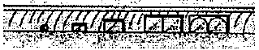
- 지표면에 고속도로 건설 하부에 생태이동통로 조성
(정답률: 53%)
55. 생물 종다양도와 서식처 여건 간의 상관에 대한 설명 중 틀린 것은?
- 종다양도는 서식처 연륜과 정(+)의 상관을 보인다.
- 종다양도는 서식처 격리와 부(-)의 상관을 보인다.
- 종다양도는 서식처 이질성과 부(-)의 상관을 보인다.
- 종다양도는 서식처 간섭(훼손)과 정(+) 또는 부(-)의 상관을 보인다.
(정답률: 50%)
56. 생물학적 침입에 대한 대책으로 거리가 먼 것은?
- 이입의 기회 줄이기
- 침입종의 효과적인 제거
- 이입종이 정착하기 어려운 환경 조성
- 대규모 개체군을 일제포획하여 제거
(정답률: 68%)
57. 종비토뿜어붙이기 공법용 재료 중 보조자재에 해당하지 않는 것은?
- 자연토양
- pH완충재
- 단립화재
- 보수재
(정답률: 62%)
58. 토양주소(soit structure) 중 토양구조의 정의와 설명이 틀린 것은?
- 단림구조 : 일반적으로 해안의 사질양토에서 발견되며, 비교적 거친 모래입자가 단일상태로 접합되어 있고 특정구조를 나타내지 않는다.
- 니상구조 : 부식 함량이 적은 미사질 토양에서 때때로 발견되며, 이 구조는 소공극은 많지만 대공극이 없으므로 통기성 및 투수성이 나쁘다.
- 구상구조 : 유기물이나 석회가 많은 표층에서 많이 발달되며 특히 표토에서 잘 발달하나 토양공극이 큰 편이라 우수의 흡수도 및 토양침식에 대한 저항성이 나쁘다.
- 괴상구조 : 면이나 모서리가 잘 발달하여 다면체를 이루는 구조이다.
(정답률: 46%)
59. 자연환경복원을 위한 생태계의 복원과정 중에서, ( )안에 적합한 것은?
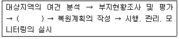
- 적용기술 선정
- 공청회 개최
- 예산확인
- 복원목적의 설정
(정답률: 72%)
60. 생태네트워크 계획의 과정에서 보전, 복원, 창출해야 할 서식지 및 분단장소를 설정하는 과정은?
- 조사
- 분석ㆍ평가
- 실행
- 계획
(정답률: 62%)
4과목: 경관생태학
61. UNESCO의 MAB(Man and Biosphere Reserve) 생물권 보전지역과 관련하여 희귀종과 고유종, 멸종위기종이 다수 분포하고 있는 핵심지역의 보호를 위해 필요하다고 인정하는 주변지역에서 허용되지 않는 행위는?
- 인간거주
- 관광 및 휴식
- 교육 및 레크리에이션
- 연구소와 실험연구
(정답률: 52%)
62. 비오톱의 개념은 시대에 따라서 조금씩 변화해 가는 추세에 있다. 다음 중 비오톱의 개념을 결정하는 특성이 아닌 것은?
- 유사 학문적 관점에 착안하여 사용하는 특성
- 생물서식지의 분포지로서 위치적 특성
- 서식환경의 질적 특성
- 사식환경의 입지적 특성
(정답률: 64%)
63. 다음 중 서식처 가장자리의 모양에 따른 가장자리 효과를 나타낸 그림으로 가장 거리가 먼 것은?
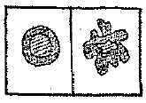
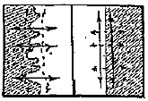
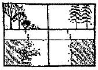
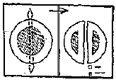
(정답률: 45%)
64. 산림경관생태에 대한 설명으로 가장 적합한 것은?
- 성장단계에서 극상단계로 갈수록 총생물량이 감소하며, 생물종의 구성은 처음에는 느리게, 차차 빠르게 변화된다.
- 산의 영양물질은 토양보다 식물에 저장되는 경향이 있으나, 고도가 높아짐에 따라 분해비율이 낮아져 고도에 따라 식생변화추이가 달라지기도 한다.
- 고온다습한 여름과 저온 건조한 겨울이 나타나는 우리나라는 동북아시아 온대몬순기후에 속하며 계절에 따른 변이가 뚜렷한 온대상록침엽수림지대로 분류된다.
- 우리나라의 산림경관은 표고가 낮은 지대와 산림에는 소나무가, 표고가 높은 지대와 능선에는 종참나무가, 입지조건이 열악한 지역은 신갈나무가 나타난다.
(정답률: 50%)
65. 우리나라의 온대림을 특징 지우는 수종이 아닌 것은?
- 밤나무
- 단풍나무
- 물푸레나무
- 후박나무
(정답률: 60%)
66. 다음 중 섬생물지리이론에 기반한 자연보전지구 설계지침(Diamond, 1975)으로 틀린 것은?
- 넓은 지역을 필요로 하는 큰 포유동물에게는 큰 것은 작은 것보다 더 낫다
- 면적이 같을 경우에는 숫자가 많은 것이 더 낫다.
- 작은 징검들 모양의 보존지역이 있는 경우는 없는 것보다 낫다.
- 전체유역, 이주로, 섭식장소 등은 보존지역 외부에 있는 것이 더 낫다.
(정답률: 63%)
67. 모형(model)은 경관생태학에서 중요한 연구 도구이며 미래에도 중요한 도구이다. 모형의 현명한 적용을 위해 필요한 주의사항 중 관계가 먼 것은?
- 모델의 수행 결과는 모형이 수립된 가설이나 가정의 결과이다.
- 계수 값을 계산하는데 있어 오차에 대한 모형의 민감도를 이해하는 것이 중요하다.
- 모형은 현실의 단순화이다.
- 최첨단 기술 적용은 좋은 모형 수립의 신회성을 보장한다.
(정답률: 48%)
68. 경관의 이질성에 관한 설명 중 옳지 않은 것은?
- 이질성에는 미시적 이질성과 거시적 이질성이 있다.
- 간섭이 증가하면 이질성은 항상 감소한다.
- 이질성이 중간 정도일 때 종다양성이 높아진다.
- 아프리카 사바나 지역은 미시적 이질성이 높은 지역이다.
(정답률: 49%)
69. 파편화된 서식처의 면적에 대한 SLOSS(Single Large Or Several Small)논쟁에 대한 설명으로 틀린 것은?
- 종수와 경관조각의 크기가 어떠한 관련성을 가질 것인가에 대한 논쟁이다.
- 큰 경관조각은 대형동물의 유지에 유희라나 서식처 다양성이 부족할 가능성이 있다.
- 여러 개의 작은 경관조각은 서식처 다양성을 유지하여 종 다양성을 유지할 수 있다.
- 종 다양성을 유지하기 위해 큰 경관조각을 여러 개의 작은 경관조각으로 대체하는 것이 바람직하다.
(정답률: 59%)
70. 다음 중 트롤(Troll.C.)에 의한 최소의 경관개체에 대한 설명이 아닌 것은?
- 최소의 경관개체를 에코톱이라 한다.
- 이 경관개체의 내부에는 여러 가지 요소간의 긴밀한 상호작용이 인정된다.
- 기후와 토양, 식생 간의 상호 작용이 두드러진다.
- 동질의 잠재자연식생이 분포하는 영역이다.
(정답률: 50%)
71. 다음 [보기]의 설명 중 ( )안에 적합한 용어는?
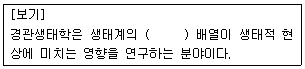
- 군집적
- 공간적
- 수자원적
- 에너지적
(정답률: 66%)
72. 다음 설명에 해당하는 산림녹지 관련 자료는?
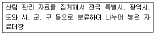
- 현존식생도
- 녹지자연도
- 생태자연도
- 산지이용구분도
(정답률: 55%)
73. 다음 중 파편화가 생물다양성을 감소시키는 메커니즘으로 틀린 것은?
- 초기배제 효과
- 종 - 연적 효과
- 가장자리 효과
- 경관저항 효과
(정답률: 44%)
74. 야생동물의 움직임 중 일방적인 움직임으로 어렸을 때 어떤 개체가 낳은 곳에서 새로운 서식처로 움직이는 것은?
- 이동
- 이주
- 행동권 이동
- 돌발적 이동
(정답률: 35%)
75. 않은 점에서 경관의 공간적 패턴을 결정하는 종을 가리키며, 임분 경관 패치나 자연 식생으로 대부분의 자연 육상경관을 특징짓는 것이 그 한 예인 것은?
- 침입종
- 한계종
- 교란종
- 우점종
(정답률: 66%)
76. 위성영상자료를 GIS 자료로 활용하려면 복잡한 과정을 거쳐야 한다. 그러한 과정에 대한 설명으로 틀린 것은?
- 전처리 과정 : 자료의 잡음제거 및 좌표값 입력
- 강초처리 과정 : 영상의 화질을 강화
- 주제분석 과정 : 강조처리 된 데이터를 선정한 주제들로 분석
- 분류 과정 : 벡터와 래스터로 분류
(정답률: 54%)
77. 다음 중 식생패치의 일반적인 기원 또는 원인이 아닌 것은?
- 잔여패치
- 도입패치
- 간섭패치
- 서식패치
(정답률: 45%)
78. 일정 토지의 자연성을 나타내는 지표로서, 식생과 토지이용 현황에 따라 녹지 공간의 상태를 등급화 한 국내의 산림녹지관련 도면을 무엇이라고 하는가?
- 임상도
- 현존식생도
- 생태자연도
- 녹지자연도
(정답률: 62%)
79. 다음은 습지의 기능을 평가하는 방법에 대한 설명이다. 어떤 평가모델에 대한 설명인가?
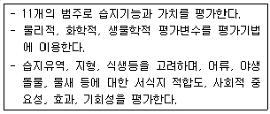
- RAM(rapid assessment methoh)
- WETⅡ(wetland evaluation technique Ⅱ)
- HGA(the hydrogeomorphic)
- EMAP(environmental monitring assessment program)
(정답률: 54%)
80. 다음 설명의 ( )에 적절한 용어는?
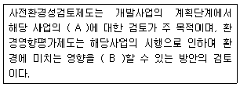
- A : 오염원, B : 최소화
- A : 입지 타당성, B : 최소화
- A : 오염원, B : 방지
- A : 입지타당성, B : 방지
(정답률: 63%)
5과목: 자연환경관계법규
81. 자연공원법상 자연공원 지정고시 및 지정기준에 관한 사항이다. ( )안에 알맞은 것은?
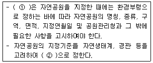
- ①국토관리청, ②환경부령
- ①공원관리청, ②환경부령
- ①공원관리청, ②대통령령
- ①국토관리청, ②대통령령
(정답률: 50%)
82. 환경정책기본법령상 해역의 생태기반 해수수질기준 중 Ⅲ(보통)등급의 수질평가 지수값(Water Quality Index)으로 옳은 것은?
- 13~22
- 28~39
- 30~36
- 34~46
(정답률: 55%)
83. 농지법규상 해당 농지의 토지개량 등을 위한 객토ㆍ성토ㆍ절토의 기준으로 옳지 않은 것은?
- 객토는 해당 농지에 재배 중인 다년생식물을 수확하기 전에 시행할 것
- 성토는 연접 토지 보다 높거나 해당 농지의 관개에 이용하는 용수로 보다 높게 성토하지 아니할 것
- 성토는 농작물의 경장 등에 부적합한 토석 또는 재활용 골재 등을 사용하여 성토하지 아니할 것
- 절토는 비탈면 또는 절개면에 대하여 토양의 유실 등을 방지할 수 있는 안전조치가 되어 있을 것
(정답률: 57%)
84. 산지관리법령상 산사태 또는 재해방지나 경관유지 등에 필요한 조치 또는 복구에 필요한 비용을 산림청장에게 예치하는 경우는?
- 산지의 형질변경, 입목의 벌채 또는 굴취를 수반하지 아니하면서 가축을 방목하는 용도로 산지를 일시사용하려는 경우
- 산지전용ㆍ산지일시사용을 하고자 하는 면적이 700제곱미터인 경우
- 작업로, 임도 또는 산림보호시설을 설치하기 위하여 산지일시사용신고를 하는 경우
- 산책로, 탐방로, 등산로를 설치하기 위하여 산지일시사용신고를 하는 경우
(정답률: 50%)
85. 환경정책기본법령상 아황산가스(SO2)의 대기환경기준으로 옳은 것은? (단, 24시간 평균치)
- 0.02ppm 이하
- 0.03ppm 이하
- 0.⑤ppm 이하
- 0.06ppm 이하
(정답률: 60%)
86. 국토기본법상 국토종합계획은 몇 년 단위로 수립하는가?
- 1년
- 5년
- 10년
- 20년
(정답률: 59%)
87. 자연공원법규상 토지 개간의 경우 공원관리청이 징수하는 점용(또는 사용) 기준요율로 옳은 것은? (단, 기타 다른 법령에서 별도로 정한 기준 등은 고려하지 않음)
- 수확예상액의 100분의 5 이상
- 수확예상액의 100분의 10 이상
- 수확예상액의 100분의 25 이상
- 수확예상액의 100분의 50 이상
(정답률: 63%)
88. 농지법령상 이농당시의 소유농지를 계속하여 소유할 수 있는 자의 농업경영긱산으로 :“대통령령으로 정하는 기간”에 해당하는 기준은?
- 2년
- 3년
- 5년
- 8년
(정답률: 60%)
89. 산지관리법에서 정한 산지의 구분 중 보전산지에 해당하며, 임업생산과 함께 재해방지, 수원보로, 자연생태계 보전, 자연경관보전, 국민보건휴양증징 등을 위해 필요한 산지에 해당하는 것은?
- 보호용산지
- 임업용산지
- 공익용산지
- 휴양용산지
(정답률: 60%)
90. 개발제한구역의 지정 및 관리에 관한 특별조치법 시행규칙상 경계표석의 규격 및 설치방법기준 중 표석의 색상은?
- 흰색
- 노란색
- 녹색
- 검은색
(정답률: 74%)
91. 국토의 계획 및 이용에 관한 법률상 국토의 용도구분에 해당되지 않는 지역은?
- 도시지역
- 준도시지역
- 관리지역
- 자연환경보전지역
(정답률: 68%)
92. 야생생물 보호 및 관리에 관한 법률 시행규칙상 행정처분 기준으로 옳지 않은 것은?
- 일반기준으로 위반행위가 둘 이상인 경우로서 그에 해당하는 각각의 처분기준이 다른 경우에는 그 중 무거운 처분기준에 따른다.
- 일반기준으로 위반행위의 횟수에 따른 행정처분의 기준은 최근 2년간 같은 위반행위로 행정처분을 받은 경우에 적용한다.
- 개별기준으로 야생동물치료기관으로 지정을 받은 자가 특별한 사유 없이 조난 또는 부상당한 야생동물의 구조ㆍ치료를 3회 이상 거부한 경우 1차 위반시 행정처분기준은 경고이다.
- 개별기준으로 야생동물치료기관으로 지정을 받은 자가 특별한 사유 없이 조난 또는 부상당한 야생동물의 구조ㆍ치료를 3회 이상 거부한 경우 2차 위반시 행정처분기준은 지정취소이다.
(정답률: 66%)
93. 다음은 산지관리법규상 산사태위험판정기준표에 시용되는 용어의 정의 및 적용기준이다. ( )안에 알맞은 것은?
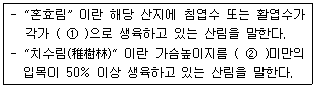
- ①25% 초과 75% 미만, ②6cm
- ①25% 초과 75% 미만, ②10
- ①50초과 75% 미만, ②6cm
- ①50초과 75% 미만, ②10
(정답률: 48%)
94. 개발제한구역의 지정 및 관리에 관한 특별조치법상 개발제한구역관리계획 수립에 대한 사항으로 거리가 먼 것은?
- 중앙행정기관의 장과 시ㆍ도지사는 개발제한구역을 종합적으로 관리하기 위하여 개발제한구역관리계획을 수립하여 국토교통부장관의 승인을 얻어야 한다.
- 개발지한구역관리계획은 5년 단위로 수립한다.
- 개발제한구역관리계획에는 개발제한구역 관리의 목표와 기본방향, 현황 및 실태의 조사, 토지이용 및 보전 등을 포함하여야 한다.
- 시ㆍ도지사가 관리계획을 수립하고자 하는 때에는 미리 관계 시장, 군수 또는 구청장의 의견을 듣고 지방도시계획위원회의 심의를 거쳐야 한다.
(정답률: 43%)
95. 자연환경보전법령상 환경부장관이 생태계보전협력금을 부과하고자 할 때 서면으로 통지하여야 하는 기간기준으로 옳은 것은? (단, 그 밖의 사항은 고려하지 않는다.)
- 1개월간의 납부기간을 정하여 납부개시 5일전까지 서면으로 통지하여야 한다.
- 3개월간의 납부기간을 정하여 납부개시 10일전까지 서면으로 통지하여야 한다.
- 6개월간의 납부기간을 정하여 납부개시 15일전까지 서면으로 통지하여야 한다.
- 12개월간의 납부기간을 정하여 납부개시 30일전까지 서면으로 통지하여야 한다.
(정답률: 44%)
96. 국토의 계획 및 이용에 관한 법률상 용어 정의로 옳지 않은 것은?
- “용도구역”이란 토지의 이용 및 건축물의 용도ㆍ건폐율ㆍ용적률ㆍ높이 등에 대한 용도지역 및 용도지구의 제한을 강화하거나 완화하여 따로 정함으로써 시가지의 무질서한 확산방지, 계획적이고 단계적인 토지이용의 도모, 토지이용의 종합적 조정ㆍ관리 등을 위하여 도시ㆍ군관리계획으로 결정하는 지역을 말한다.
- “기반시설부담구역”이란 개발밀도관리구역 내의 지역으로서 개발로 인하여 도로, 공원, 녹지 등 대통령령으로 정하는 기반시설의 설치가 필요한 지역을 대상으로 기반시설을 설치하거나 그에 필요한 용지를 확보하게 하기 위하여 지정ㆍ고시하는 구역을 말한다.
- “지구단위계획”이란 도시ㆍ군계획 수립 대상지역의 일부에 대하여 토지 이용을 합리화하고 그 기능을 증진시키며 미관을 개선하고 양호한 환경을 확보하며, 그 지역을 체계적ㆍ계획적으로 관리하기 위하여 수립하는 도시ㆍ군관리계획을 말한다.
- “공동구”란 전기ㆍ가스ㆍ수도 등의 공급설비, 통신시설, 하수도시설 등 시하매설물을 공동 수용함으로써 미관의 개선, 도로주소의 보전 및 교통의 원활한 소통을 위하여 지하에 설치하는 시설물을 말한다.
(정답률: 49%)
97. 독도 등 도서지역의 생태계 보전에 관한 특별법상 특정도서에서 인화물질을 이용하여 음식물을 조리하거나 야영한 자에 대한 과태료 부과기준은?
- 1000만원 이하의 과태료를 부과한다.
- 500만원 이하의 과태료를 부과한다.
- 300만원 이하의 과태료를 부과한다.
- 100만원 이하의 과태료를 부과한다.
(정답률: 47%)
98. 환경정책기본법령상 하천의 수질 및 수생태계 환경기준으로 옳은 것은? (단, 사람의 건강보호 기준, 대상항목은 안티몬( ① ), 디에틸헥실프탈레이트( ② )이며, 단위는 mg/L이다.)
- ①0.5 이하, ②0.04 이하
- ①0.04 이하, ②0.5 이하
- ①0.008 이하, ②0.02 이하
- ①0.02 이하, ②0.008 이하
(정답률: 59%)
99. 야생생물 보호 및 관리에 관한 법률상 정당한 사유없이 야생동물을 포획ㆍ감금하여 고통을 주거나 상처를 입히는 행위 등 야생동물에게 학대행위를 한 자에 대한 벌칙기준으로 옳은 것은?
- 1년 이하의 징역 또는 500만원 이하의 벌금
- 2년 이하의 징역 또는 1천만원 이하의 벌금
- 1년 이하의 징역 또는 300만원 이상 2천만원 이하의 벌금
- 1년 이하의 징역 또는 500만원 이상 3천만원 이하의 벌금
(정답률: 40%)
100. 다음은 자연환경보전법상 용어의 정의이다. ( )안에 가장 적합한 것은?
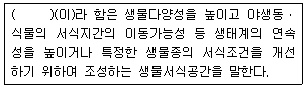
- 생태축
- 소(小)생태계
- 생태통로
- 생태ㆍ경관보전지역
(정답률: 60%)